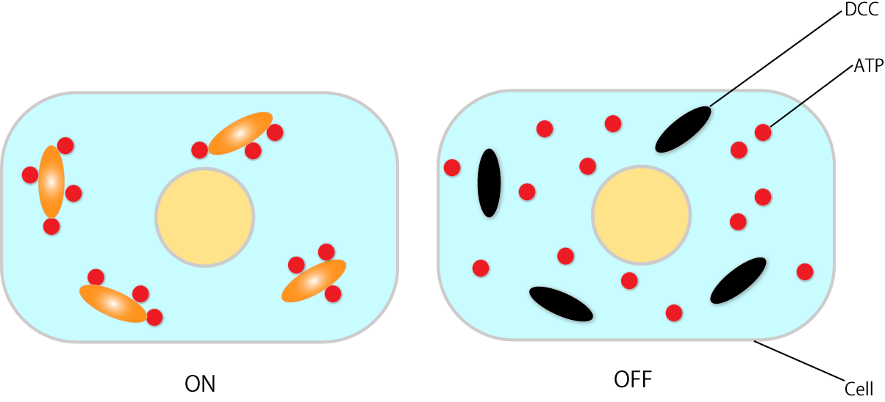

ON-OFF Switch
In addition, we tried to implement below three systems.
{kind=link}
T7RNA polymerase recognizes double stranded DNA such as Figure 3(a) and starts a reaction with it.
Therefore, we set double stranded DNA's state such as Figure 3(a) as switch ON state
and single stranded DNA's state such as Figure 3(b) as switch OFF state.
Thereby we are able to switch ON-OFF state of polymerase reaction.
In addition, the actual work in the cell is as shown in Figure 4.
.png)
Figure 3 : ON-OFF Expression of T7RNA Polymerase

{kind=link}
Figure 4 : Image of ON State & OFF State in Cell
A purpose of our project is to not adversely affect to normal cells. So, we implemented the ON-OFF switch in this time.
Thereby when cancer cells die, the circuits in normal cells is turned off by the ON-OFF switch.
Thus it do not load more than necessary. A scheme of ON-OFF switch circuit is shown in Figure 5.
{kind=link}
Figure 5 : Scheme of ON-OFF Switch Circuit
A double strand which is made of a and a* is T7 promoter sequence.
In additon, a double strand which is made of b and b* makes RNA consuming ATP.
Moreover, we used a seesaw gate to control time between ON state and OFF state.
The seesaw gate is a arithmetic element such as Figure 6 by DNA molecular reactions[9][10].
It produces an output for inputs exceeding a preset threshold, however it makes a delay.
We think that the delay is useful for adjusting time for ON→OFF, and we implemented the seesaw gate.
A right part of Figure 5 is the seesaw gate.
(Its simulation is described in Dry Experiment of Experiment and its advantages are described in Discussion.)

Figure 6 : Arithmetic Element
We designed the ON-OFF switch based on strand displacement reactions.
This gate was composed of four DNA strand displacement reaction processes.
Each of these reaction processes is explained below.
First Process:
First, the circuit starts by administering Input.
In the first process, we aimed to make the models of Signal1 and Signal2
using a strand displacement reaction (Figure 7, Figure 8).
Thereby outputed Signal1 and single stranded DCC cause hybridization and they change to double stranded.
In other words, DCC is changed from OFF state into ON state (Video 2).
① T0* of Gate1 is bound with T0 of Input.
② Gate1 and Input are effectively combined.
③ A part of Gage1 separates from the complex.
④ Signal1, Signal2, and Waste are generated by separating the components.
⑤ DCC(ON) is generated by DCC(OFF) and Signal1(Figure 8).
{kind=link}
Figure 7 : First Process(1)
&Signal1.gif)
Figure 8 : First Process(2)
Video 2 : Gate1&Input
Second Process:
In the second process, we control a reacion by a gate of threshold's concentration.
A threshold value is decided by Threshold. Moreover, Signal2 and Threshold meet and cause
a strand displacement reaction and then Signal2 disappear.
In other words, Signal2 exceeding the Threshold's concentration is required to proceed with the reacion (Figure 9, Video 3).
① T3* of Threshold is bound with T3 of Signal2.
② Threshold and Signal2 are effectively combined.
③ A part of Waste and Fuel separates from the complex.
④ Waste and Fuel are genarated by separating the conponents.

Figure 9 : Second Process
Video 3 : Signal2&Threshold
Signal2 exceeding the Threshold's concentration goes Third process,
and Fule which is made in this process is used in Third process.
Third Process:
In the third process, we perform processing by chain reaction of strand displacement reaction
called seesaw gate (Figure 10, Figure 11 and Video 4).
① T3* of Gate2 is bound with T3 of Signal2.
② Gate2 and Signal2 are effectively combined.
③ A part of Releaser and Gate3 separates from the complex.
④ Releaser and Gate3 are genarated by separating the conponents.
Gate2 made in previous steps causes a strand displacement reaction with Fuel, and Signal2 is made again.
①' T2* of Fule is bound with T2 of Gate3.
②' Fuel and Gate3 are effectively combined.
③' A part of Signal2 and Gate4 separates from the complex.
④' Signal2 and Gate4 are genarated by separating the conponents.
The cycle such as this system is called seesaw gate. Furthermore, it refills Signal2 which is consumed in Second process
and outputs Releaser.
As described above, Threshold and seesaw gate are used to adjust time between ON and OFF of DCC.

Figure 10 : Third Process(1)
{kind=link}
Figure 11 : Third Process(2)
Video 4 : Seesaw Gate
Final Process:
In the final process, we aimed to change double stranded DCC into single stranded DCC
by dissociating Signal1 from double stranded DCC.
In other words, we aimed to swich a state of the circuit ON state to Off state (Figure 12, Video 5).
① T1 of DCC(ON) is bound with T1* of Releaser.
② DCC(ON) and Releaser are effectively combined.
③ A part of DCC(ON) separates from the complex(It is Signal1).
④ DCC(OFF) and Waste are genarated by separating the components.
&Releaser.gif){kind=link}
Figure 12 : Final Process
Video 5 : DCC(ON)&Releaser
According to previous four processes, we are able to switch a state of the circuit(OFF → ON → OFF)
automatically. That’s to say, single administration of DCC is come true and it is convenient.
However, Figure 5 has two ploblems.
First, the circuit causes an undesired reaction when it starts.
For instance, we mention Input and DCC(OFF) here.
After Input is administered, Input and DCC(OFF) may happen hybridization
because a part of their base sequences is complementary.
We should change their domains not to happen hybridization.
However, it is impossible in principle because we should change domains of Signal1 and Gate1_under in response to Input.
The circuit now causes below three undesired reactions.
① Input binds with DCC(OFF)
② Signal1 binds with Signal2
③ Input binds with Gate2
Second, some double stranded DNA make T7RNA promoter
and happen polymerase reaction even when the circuit is not ON state.
Therefore, We used mismatched base pair to solve these problems.
What is mismatched base pair
A&T and C&G in DNA base are held each other by hydrogen-bonding which is so-called Watson-Crick base pair,
but other than that it is reported that there are other combinations (e.g. A and G ).
We call this Mismatched base pair[11].
The binding power of mismatched base pair is weaker than that of Watson-Crick base pair,
but the binding power between G and T is stronger among mismatched base pair (We found this characteristic in try and error with NUPACK).
The example of mismatched base pair is shown below.
In the Table 1, base sequence (A) is complete complementary double stranded DNA,
(B) is double stranded DNA including four mismatched C-A base pairs and
(C) is double stranded DNA including four mismatched G-T base pairs.
{kind=link}
We confirm whether these base sequence form double stranded DNA with NUPACK[12]
(a software suite for the analysis and design of nucleic acid structures) and show the result below.
{kind=link}
Figure 13 : Example of Mismatch Base Pair
As this Figure 13, it is clear that G and T are binding to each other, but in contrast A and C are not.
Use of Mismatch
When DNA(A)(B) which we expect to be double stranded include mismatched GT base pair,
DNA(C) which is complete complementary to (A) and DNA(D) which is complete complementary to (B) make mismatched CA base pair.
Therefore, (A) is bound with (B) but (C) is not bound with (D) (Figure 14).
{kind=link}
Figure 14 : Use of Mismatch
We improved the circuit of Figure 5 using this character.
In this project, we added mismatched base pair four times and added (m1)(m2)(m3)(m4) precedes the domain name.
We will show NUPACK's evaluation about each part of points added mismatched base pair below.
(m1)Input & DCC(OFF)
As previously stated, Input and DCC(OFF) are complementary, so they cause hybridization.
We added mismatched base pair here (Figure 15). Its result of NUPACK is as shown in Figure 16.
Red characters show desired reactions (The same hereinafter).
mismatch.png){kind=link}
Figure 15 : (m1)Input & DCC(OFF)
NUPACK.png){kind=link}
Figure 16 : NUPACK's Evaluation of (m1)
(m2)Signal1 & Signal2
Similarly, Signal1 and Signal2 are complementary, so they cause hybridization.
They should be completely complementary but unlike (m1).
We added mismatched base pair to Signal1 to make it be bound with DCC (Figure 17).
A result of NUPACK is as shown in Figure 18.
mismatch.png){kind=link}
Figure 17 : (m2)Signal1 & Signal2
NUPACK.png){kind=link}
Figure 18 : NUPACK's Evaluation of (m2)
(m3)Input & Gate2
We also added mismatched base pair Input and Gate2 because it starts a reaction from T3 which is toehold(Figure 19).
mismatch.png){kind=link}
Figure 19 : (m3)Input & Gate2
(m4)Gate2
Polymerase reaction is happened because Gate2 includes T7 promoter sequence.
We also added mismatched base pair here to prevent T7RNA polymerase from recognizing T7 promoter sequence (Figure 20).
mismatch.png){kind=link}
Figure 20 : (m4)Gate2
A new scheme of the circuit added mismatched base pair is as shown in Figure 21.
{kind=link}
Figure 21 : Scheme of ON-OFF Switch Circuit Added Mismatch
It is expected to reduce undesired reactions.
NUPACK's evaluation of bonding strength of double stranded DNA whitch is added mismatched base pair
is as shown in Figure 22.
It includes mismatched base pair of G-T bounding, however we are able to ascertain that bouding power is kept strong.
{kind=link}
Figure 22 : NUPACK's Evaluation of Gate1 and Gate2
In additon, T7RNA promoter disappears except the circuit is ON state by adding mismatched base pair
, and these problems are solved (Figure 23).
{kind=link}
Figure 23 : Excluding T7 Promoter Sequence by Mismatch Base Pair
When this circuit works successfully, DCC(OFF) and Waste are generated as shown in Figure 23. We are thinking whether they can be used well for something.